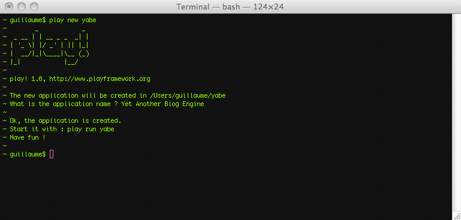

Installation guide
Prerequisites
To run the Play framework, you need Java 5 or later. If you wish to build Play from source, you will need the Git source control client to fetch the source code and Ant to build it.
Be sure to have Java in the current path (enter java -version to check). Play will use the default Java or the one available at the $JAVA_HOME path if defined.
The play command line utility uses Python. So it should work out of the box on any UNIX system (however it requires at least Python 2.5).
Installation from the binary package
Generic instructions
In general, the installation instructions are as follows.
- Install Java.
- Download the latest Play binary package and extract the archive.
- Add the ‘play’ command to your system path and make sure it is executable.
Mac OS X
Java is built-in, or installed automatically, so you can skip the first step.
- Download the latest Play binary package and extract it in
/Applications. - Edit
/etc/pathsand add the line/Applications/play-1.2.5(for example).
An alternative on OS X is:
- install HomeBrew
- run
brew install play
Linux
To install Java, make sure to use either the Sun-JDK or OpenJDK (and not gcj which is the default Java command on many Linux distros)
Windows
To install Java, just download and install the latest JDK package. You do not need to install Python separately, because a Python runtime is bundled with the framework.
Build from the latest sources
To benefit from the latest improvements and bug fixes, you may want to compile Play from sources. You’ll need a Git client to fetch the sources and Ant to build the framework.
From the command line:
# git clone git://github.com/playframework/play.git
# cd play/framework
# ant
The Play framework is ready to use.
Using the play command
When the framework is correctly installed, open a shell and execute play.
$ play
You should see the play default message:
You can get more help on any specific command using play help any-command-name-here. For example, try:
# play help run
Creating a new application
Use the new command to create a new application. You must give a non-existent path where the application will be created.
# play new myApp

Will create a new application. Start it with:
# play run myApp
You can then open a browser at http://localhost:9000 and see the default page for the application.
Your Play environnement is ready
Next: Set-up your preferred IDE.